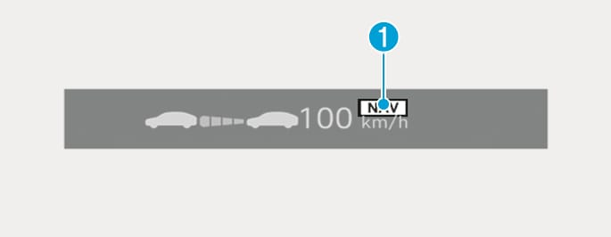
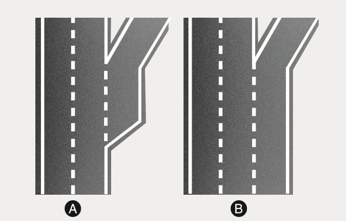

내비게이션 기반 스마트 크루즈 컨트롤 작동
내비게이션 기반 스마트 크루즈 컨트롤은 다음의 조건에 모두 해당하면 작동합니다.
-
인포테인먼트 시스템의 설정에서 고속도로 주행속도 자동 조절 설정
-
스마트 크루즈 컨트롤 작동 중
-
전용도로 주행 중
내비게이션 기반 스마트 크루즈 컨트롤의 작동 상태는 클러스터에

2C_NSCCStandbyInfo
-
초록색: 작동 조건을 모두 만족 할 경우
-
초록색 점멸: 속도 제어 중일 경우
-
회색: 스마트 크루즈 컨트롤이 일시 해제나 경로 재탐색 등으로 제어를 할 수 없는 경우
-
흰색 점멸: 운전자가 가속 페달을 밟았을 경우
전용도로 본선에서 제한속도를 초과한 설정속도로 스마트 크루즈 컨트롤이 작동하는 경우, 안전구간의 제한속도에 따라 자동으로 감속합니다. 안전구간을 통과한 후에는 스마트 크루즈 컨트롤의 설정속도로 주행합니다.
-
감속 시작은 차량의 주행속도와 제한속도에 따라 다릅니다. 주행속도가 높으면 감속 시점이 빨라집니다.
-
고속도로 안전구간 자동감속 기능은 내비게이션이 카메라 안내에 따라 작동합니다. 내비게이션 카메라 안내 설정 방법은 인포테인먼트 시스템 웹 매뉴얼을 참고하십시오.
-
구간 과속단속 구간에서 차량의 평균속도가 제한속도를 초과할 경우 제한속도보다 낮은 속도로 주행할 수 있습니다.
-
이동식 과속단속 구간의 경우 운전자의 안전을 위해 과속단속 안내 시점이 지난 후에도 일정 구간 동안 제한속도로 유지될 수 있습니다.
-
고속도로 안전구간 자동감속 기능이 작동하여 감속중에도 차량속도가 제한속도보다 높을 경우 경고음이 울릴 수 있습니다.
스마트 크루즈 컨트롤 작동 방법은 '스마트 크루즈 컨트롤 (SCC)'을 참고하십시오.
전용도로 본선에서 안전한 속도로 곡선구간을 주행하도록 자동으로 감속합니다. 곡선구간을 통과한 후에는 스마트 크루즈 컨트롤의 설정속도로 주행합니다.
감속 시작 시점은 차량의 주행속도와 도로의 곡률에 따라 다릅니다. 주행속도가 높을수록 감속 시작 시점이 빨라집니다.

2C_NSCCAutoDecelAtInterchange
- 분기
- 분리
차량의 전방에 진출입로(IC, JC, 휴게소)가 있는 경우 안전한 속도로 진출입로를 주행하도록 곡률에 따라 자동으로 감속합니다. 진출입로를 통과한 후에는 스마트 크루즈 컨트롤의 설정속도로 주행합니다.
내비게이션에서 분기 형태의 진출입로로 경로를 안내하고 마지막 차로로 주행하는 경우, 진출입로 진입 전에 자동으로 감속합니다. 분리 형태의 진출입로라면 진입 전에 자동으로 감속하지 않습니다.
감속 시작 시점은 차량의 주행속도와 진출입로의 곡률에 따라 달라집니다. 주행속도가 높을수록 감속 시작 시점이 빨라집니다.
다음과 같은 경우에 클러스터에 경고문이 표시됩니다.
-
내비게이션 기반 스마트 크루즈 컨트롤이 안전한 속도까지 감속할 수 없을 경우
-
전방의 진출로가 매우 짧을 경우
-
예상 주행 경로를 판단할 수 없을 경우
-
고속도로 및 자동차 전용도로 진출입로에서 일반도로 진입 전